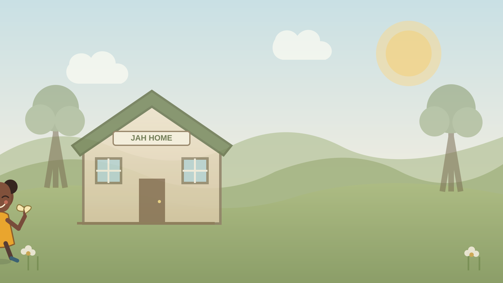
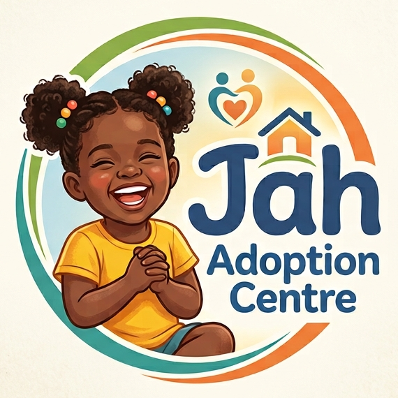

I’m considering adoption
Read the adoption journey, then contact an adoption agency to confirm its role and explain the formal process.
View the adoption journey
Ask us about adoption support, volunteering, or ways to help children thrive.

If you are wondering who founded Jahs Adoption Centre, our organization was established in 2018 in Gqeberha to support children in the Nelson Mandela Bay region.
Many people ask what year the first child was adopted or how long a child adoption takes. While every journey is unique, our team provides full support throughout the legal timeline.
Regarding the cost to adopt a child and the legal requirements, we ensure all processes meet South African legal standards for child safety and protection.
Each child’s needs and circumstances are different. The responsible adoption agency can explain how the process applies to a specific situation.
Assessment, preparation, and matching are intended to consider the child’s safety and needs. Ask the adoption agency how these steps work and who you can contact with concerns.
Matching depends on the individual child and the information gathered through the formal process. It is not a catalogue or a first-come, first-served choice; the agency explains the steps and decisions.
Children’s privacy and dignity must be protected. This website does not publish identifiable child profiles. Ask the responsible agency how it shares information safely during a formal matching process.
Support depends on the agency and each family’s circumstances. Ask about counselling, follow-up, and who to contact if a child or family needs additional help.
For a general overview of the South African process, read the South African Government adoption guidance and confirm current details with an adoption agency.
Find your next step
Read the adoption journey, then contact an adoption agency to confirm its role and explain the formal process.
View the adoption journeyTell us what kind of support you’re interested in. The centre can explain current opportunities and any preparation needed.
Explore volunteeringChoose the closest enquiry topic and include a safe way for the team to contact you.
Go to the enquiry formPlease fill out the form below to enquire about adoption, volunteering, or sponsorship opportunities.